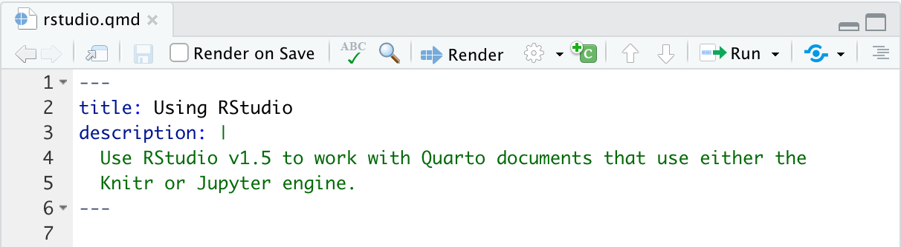

![]()
options(scipen=999)
library(rmdwc)
files <- txtcount("index.qmd")
files$chars[1] 24028Cette fiche présente le modèle Quarto d’un Article Rzine et les consignes éditoriales élémentaires à suivre.
template, consignes éditoriales, modèle
Il s’agit d’une publication didactique qui présente une méthodologie, un type d’analyse, une fonctionnalité, ou encore le traitement d’un certain type de données avec le langage R. Un article peut être principalement technique, méthodologique ou thématique ; il peut également couvrir ces trois aspects. Il est évalué par au moins deux personnes ayant les connaissances thématiques nécessaires.
Le premier objectif d’un article consiste à partager de manière pédagogique des méthodes reproductibles applicables en SHS. La publication d’un article est ouverte à toutes et tous, quels que soient son statut et sa discipline. Un article peut être réalisée à plusieurs et présenter une dimension interdisciplinaire.
Un article Rzine est rédigé avec Quarto, un système open-source de publication d’articles scientifiques et techniques basé sur Pandoc. Il permet d’exploiter différents langages de programmation tels que R, Python, Julia ou JavaScript. Il applique le même principe de programmation lettrée que RMarkdown (précédent modèle Rzine), dont il représente une version plus moderne et facile à adapter à différents cadres d’utilisation. Quarto peut être utilisé en ligne de commande ou à travers d’autres logiciels comme RStudio ou Visual studio code.
Le modèle Rzine Quarto est accessible ici : ici
Afin d’assurer la cohérence et la qualité du contenu des articles Rzine, plusieurs critères d’acceptation ont été définis. Certains de ces critères peuvent conduire au refus immédiat d’une proposition d’article par le comité éditorial, d’autres critères font l’objet d’une analyse contradictoire par plusieurs évaluateur·rice·s.
Les éditeur·rice·s et les évaluateur·rice·s veilleront à ce que :
La table ci-dessous présente les critères d’évaluation détaillés d’un article :
| Critères d’évaluation d’un article | Comité de lecture | Relecteur.rice.s | |
|---|---|---|---|
| Thématique | Concerne des méthodes applicables aux SHS | X | X |
| Thématique | Intérêt pour la communauté des utilisateurs de R en SHS | X | X |
| Thématique | Pas de fiche Rzine similaire déjà produite | X | |
| Contenu | Présentation des prérequis techniques et méthodologiques | X | |
| Contenu | Contextualisation de l’analyse ou méthode présentée | X | |
| Contenu | Présentation des prérequis techniques et méthodologiques | X | |
| Contenu | Clarté et rigueur de la démonstration | X | |
| Contenu | Rédaction dans un français ou un anglais correct | X | |
| Contenu | Respect des consignes éditoriales détaillées ci-dessous | X | |
| Contenu | Moins de 85000 caractères (code compris) (*) |
X | |
| Contenu | Pas de renvoi publicitaire explicite | X | |
| Contenu | Acceptation des futures conditions d’utilisation CC-BY-SA ** |
X | |
| Code | Justification (et stabilité) des packages utilisés *** |
X | |
| Code | Clarté (indentation, commentaire…) et reproductibilité du code présenté | X | |
| Données | Données utilisées libres, sourcées et mises à disposition | X | X |
| Données | Respect du Règlement Général sur la Protection des Données | X | X |
(*) Dénombrer le nombre de caractères contenus dans un document Quarto
La bibliothèque rmdwc et sa fonction txtcount() est utile à cette fin.
options(scipen=999)
library(rmdwc)
files <- txtcount("index.qmd")
files$chars[1] 24028Ce document Quarto contient 24028 caractères, c’est optimal pour une publication Rzine !
(**) Licence d’utilisation
Attention, être auteur.e d’un artcile Rzine, c’est accepter à ce que votre production soit mise à disposition sous les conditions d’utilisation de la licence Creative Commons BY-SA 4.0.
Vous autorisez ainsi quiconque à :
Selon les conditions suivantes :
Ainsi, le lien vers le code source de la fiche sera directement indiqué sur le document par le comité éditorial.
(***) Préférez l’usage de packages disponibles sur le CRAN
Les prérequis définis par les mainteneurs du CRAN pour déposer et rendre accessible une library R garantissent leur qualité : CRAN effectue des vérifications poussées du code et n’accepte que des packages passant sans aucun avertissement sa batterie de tests. Ces packages s’installent aussi facilement dans l’interface RStudio et ne nécessitent pas l’usage de packages externes (devtools) ou de procédures d’installation plus complexe.
Pour une plus grande pérénité du code inclut votre article et sa réutilisation dans des contextes variés, nous vous suggérons fortement de n’utiliser que des librairies disponibles sur le CRAN.

Pour initier un article Rzine, il est conseillé de télécharger le modèle accessible ici qui contient tous les fichiers utiles. Dézippez l’archive qui comprend :
Adaptez ensuite le contenu de ces fichiers à votre soumission. L’architecture du fichier central index.qmd comprend plusieurs éléments à éditer : les métadonnées du document (YAML), des blocs de texte en markdown et du code exécutable dans des chunks.
L’en-tête d’un document Quarto (aussi appelé YAML) est délimité par deux lignes de pointillés et contient les métadonnées et les éléments de style du document.
Il sert à recueillir le titre de votre contribution et des informations supplémentaires sur votre affiliation, des mots-clés, etc.
---
title: Le titre de votre contribution (obligatoire)
subtitle: Son sous titre (optionnel)
format:
rzine-html: default (ne pas modifier)
lang: fr-FR (en-EN si anglais)
date: "2024-09-05" (date de dernière modification, obligatoire)
authors:
- name: Prénom Nom (obligatoire)
affiliations:
- name: L'organisme qui vous emploie (obligatoire)
department: Votre laboratoire d'appartenance (optionnel)
address: Adresse de votre laboratoire (optionnel)
city: Ville d'appartenance du laboratoire (optionnel)
country: Pays d'appartenance du laboratoire (optionnel)
postal-code: Code postal du laboratoire (optionnel)
orcid: Vos identifiants ORCID (optionnel)
url: URL qui renvoie vers votre blog/CV en ligne (optionnel)
- name: Si plusieurs auteurs (reproduire les champs ci-dessus)
abstract: |
Un résumé de votre contribution, aussi présent dans le REAME.md (obligatoire)
keywords: [un mot clé, un deuxième mot clé] (obligatoire)
---Le contenu écrit de votre contribution, expliquant votre démarche et la succession des traitements proposés est à écrire dans un langage de balisage léger, le markdown.
Le corps du document est constitué de texte en syntaxe Markdown. Le markdown est un langage de balisage léger et très facile à maîtriser.
Il permet de définir des niveaux de titres, de mettre en forme le texte (gras, italique), d’ajouter des liens cliquables, etc.
Par exemple, le texte suivant:
Ceci est du texte en *italique*, **gras** ou en ***Gras italique***.
Pour définir des listes à puces, utilisez les **tirets** :
- premier élément
- deuxième élément
Vous pouvez également ajouter des [liens cliquables](https://rzine.fr/) Se formalisera comme cela dans le fichier HTML produit à partir du R Markdown :
Ceci est du texte en italique, gras ou en Gras italique.
Pour définir des listes à puces, utilisez les tirets :
Vous pouvez également ajouter des liens cliquables
Pour en savoir plus, se reporter au Markdown Guide.
Il est possible d’écrire des formules mathématiques en langage \TeX. Pour cela, il suffit de délimiter le contenu \LaTeX par un ou deux symboles $, ex :
$$ y = \sqrt{\frac{1}{x + \beta}} $$ En mode Inline ($) , les formules sont incluses à l’intérieur du paragraphe courant, ex : \sum_{i=1}^n X_i
En mode Displayed ($$), elles apparaissent centrées et mises en exergue, ex : y = \sqrt{\frac{1}{x + \beta}}
Quarto fournit plusieurs options qui ne relèvent pas du markdown mais utiles à connaître pour paramétrer son document.
Les callouts block sont utiles pour attirer l’attention sur certains concepts.
::: {.callout-tip}
## Intéressés par la collection Rzine ?
Consultez les [articles](https://rzine.fr/articles_rzine/) déjà publiés !

:::Consultez les articles déjà publiés !
Nous déconseillons en revanche l’usage des classes préformatées de type tabset dont la sortie n’est pas adaptée aux autres sorties qu’HTML.
Le code R est à inclure dans des chunks. Veillez à bien commenter votre code et qu’il soit aussi clair que possible. Veillez aussi à ce que l’ensemble des chunks s’exécutent sans erreur et qu’ils produisent bien les figures attendues dans le fichier HTML compilé en fin de processus.
Dans l’univers de Quarto, le code R s’exécute dans des chunks. Pour insérer un nouveau chunk, utilisez le menu Code > Insert Chunk de RStudio. Vous pouvez également utiliser le raccourci clavier Ctrl+Alt+i.
{r plot_basique} ci-dessous définit le langage de programmation mobilisé et le nom du chunk. Il n’est pas obligatoire de nommer un chunk, mais cela peut être utile pour localiser une erreur lors de la compilation.eval: true), la sortie graphique sera de taille 3 (fig-height: 3) et de largeur 7 (fig-width: 7), elle dispose d’un label (label: fig-1) qui permet utilement de l’appeler dans le corps du texte avec @fig-2 qui renvoie ceci dans le corps du document (Figure 2) et d’un nom qui permet la numérotation et le nommage (fig-cap: Un plot de base) de la figure dans le document. De nombreuses autres options sont disponibles et documentées dans la documentation de Quarto.#| echo: fenced est spécifiée.```{r plot_basique}
#| eval: true
#| fig-cap: Un plot de base
#| label: fig-2
#| fig-height: 3
#| fig-width: 7
plot(1:10)
```
A noter qu’un document Quarto peut contenir des blocs de code issus de langages informatiques différents (ObservableJS, Python, etc). A titre d’exemple, vous pouvez consulter ce document, basé sur un document Quarto qui combine 3 langages de programmation.
Les images insérées dans l’article sont à déposer dans le dossier figures.
Il existe plusieurs façons d’importer une image dans un document Quarto, notamment avec du markdown de base.
Dans Rzine et pour un référencement optimal de la figure (label, numérotation, citation), privilégiez l’import de celle-ci dans un chunk en renseignant les options #| label (valeur unique requise) et #| fig-cap.
```{r}
#| label: fig-3
#| fig-cap: "Une bien belle image"
knitr::include_graphics("figures/rzine-collection.png")
```Une bibliographie est a minima attendue. Elle sert à positionner votre contribution dans le champ thématique et/ou disciplinaire. Le glossaire est optionnel mais permet souvent utilement de rendre plus fluide le corps du document principal.
Les références bibliographiques sont à inclure dans le fichier bibliographie.bib situé à la racine du répertoire Rzine. Il s’agit d’un fichier au format BibTeX, qui sert à gérer et traiter des bases bibliographiques.
@book{CameronTrivedi2013,
author = {A. Colin Cameron and Pravin K. Trivedi},
title = {Regression Analysis of Count Data},
year = {2013},
edition = {2nd},
publisher = {Cambridge University Press},
address = {Cambridge}
}L’appel d’une ressource bibliographique dans le texte s’effectue ensuite au moyen de l’identifiant de bibliographie (@CameronTrivedi2013 ici) et renvoie dans le document compilé une référence correctement formatée Cameron et Trivedi (2013) et rajoute une section de bibliographie en fin de document.
Pour un apperçu complet des possibilités offertes pour référencer les sources de données, se reporter à cette documentation.
Pour que l’ensemble de la démonstration soit compréhensible par un public large, vous pouvez utiliser la section “glossaire” pour définir certains termes utilisés dans la fiche.
Pour cela, il suffit d’utiliser la syntaxesuivante dans le corps du texte :
Voici un terme bien technique qui mériterait quelques précisions [^1] et
un second référence [^2]
[^1]: Voici la définition du premier terme
[^2]: Et le secondAu moment de la compilation du document, un numéro est associé et affiché après le “mot à définir”. Et ce mot et sa définition seront ajoutés dans la section glossaire.
Un lien interactif est alors automatiquement crée entre le “mot” dans le corps du texte et sa définition dans la section “Glossaire”.
Par exemple, le bloc précédent produira ceci dans le document compilé.
Voici un terme bien technique qui mériterait quelques précisions 1 et un second référence 2
Tout lecteur.ice doit être en mesure de reproduire la démonstration de l’article sans contrainte de réutilisation. L’intégralité des données utilisées doivent ainsi :
Toutes les données chargées et utilisées dans une fiche devront être stockées dans le répertoire Data, disponible dans le dépôt GitHub.
L’article Rzine Analyse Territoriale Multiscalaire peut servir d’exemple.
Les données mobilisées sont accessibles dans le dossier data :
library(sf)
com <- st_read("data/data.gpkg", layer = "com", quiet = TRUE)
head(com)Simple feature collection with 6 features and 8 fields
Geometry type: MULTIPOLYGON
Dimension: XY
Bounding box: xmin: 1028158 ymin: 6298718 xmax: 1055399 ymax: 6345970
Projected CRS: RGF93_Lambert_93
INSEE_COM NOM_COM EPCI LIB_EPCI EPCI_SUB
1 06006 Aspremont 200030195 Métropole Nice Côte d'Azur T1
2 06009 Bairols 200030195 Métropole Nice Côte d'Azur T2
3 06011 Beaulieu-sur-Mer 200030195 Métropole Nice Côte d'Azur T1
4 06013 Belvédère 200030195 Métropole Nice Côte d'Azur T3
5 06020 La Bollène-Vésubie 200030195 Métropole Nice Côte d'Azur T3
6 06021 Bonson 200030195 Métropole Nice Côte d'Azur R
LIB_EPCI_SUB P16_EMPLT C16_ACTOCC1564
1 CU Nice Côte d'Azur 245.91306 1010.03482
2 CC de la Tinée 10.73870 39.24528
3 CU Nice Côte d'Azur 1439.20384 1442.32926
4 CC Vésubie-Mercantour 114.56129 260.00000
5 CC Vésubie-Mercantour 99.77861 275.00000
6 Rattachement à la Métropole 50.70275 350.00000
geom
1 MULTIPOLYGON (((1042319 630...
2 MULTIPOLYGON (((1030461 632...
3 MULTIPOLYGON (((1048266 629...
4 MULTIPOLYGON (((1045871 633...
5 MULTIPOLYGON (((1046335 633...
6 MULTIPOLYGON (((1037221 631...À ces données sont associées un fichier de métadonnées qui décrit les indicateurs (code + label) ainsi que les sources des données mobilisées :
library(kableExtra)
meta <- read.csv("data/com_meta.csv")
kable(meta, booktabs = T, caption = "margin")| Code | Libellé | Source |
|---|---|---|
| INSEE_COM | Code communal INSEE | INSEE (base-cc-emploi-pop-active-2016) |
| NOM_COM | Libellé de la commune | INSEE (base-cc-emploi-pop-active-2016) |
| EPCI | Code de la métropole d’appartenance | INSEE (table-appartenance-geo-communes-19) |
| LIB_EPCI | Libellé de la métropole d’appartenance | INSEE (table-appartenance-geo-communes-19) |
| EPCI_SUB | Code de l’EPCI entre la commune et la métropole (si adapté) | RIATE (metropole.xls) |
| LIB_EPCI_SUB | Libellé de l’EPCI entre la commune et la métropole (si adapté) | RIATE (metropole.xls) |
| P16_EMPLT | Nombre d’emplois au lieu de travail en 2016 | INSEE (base-cc-emploi-pop-active-2016) |
| C16_ACTOCC1564 | Nombre de personnes actives de 15 à 64 ans en 2016 | INSEE (base-cc-emploi-pop-active-2016) |
| geom | Géométries des communes | IGN (CONTOUR-IRIS) |
L’article présente par ailleurs dans une section dédiée les sources de données mobilisées.
La compilation d’un fichier .qmd (render avec Quarto) permet d’exécuter l’entièreté des blocs de code contenus dans un document Quarto au format HTML. Il est possible de réaliser cette opération de plusieurs façons :
 - Dans le terminal en utilisant la commande quarto render:
quarto render document.qmd # all formats
quarto render document.qmd --to pdf
quarto render document.qmd --to docxRender votre article Quarto aura pour conséquence la création d’un fichier du même nom au format HTML. Il s’agit de votre article mis en page avec le modèle rzine (paramètres inclus dans le dossier _extension, à ne pas modifier).
Ce fichier HTML est automatiquement enregistré à la racine du répertoire source, ce sera lui qui sera publié à la fin du cycle de relecture.
R version 4.4.1 (2024-06-14 ucrt)
Platform: x86_64-w64-mingw32/x64
Running under: Windows 10 x64 (build 19045)
Matrix products: default
locale:
[1] LC_COLLATE=French_France.utf8 LC_CTYPE=French_France.utf8
[3] LC_MONETARY=French_France.utf8 LC_NUMERIC=C
[5] LC_TIME=French_France.utf8
time zone: Europe/Paris
tzcode source: internal
attached base packages:
[1] stats graphics grDevices utils datasets methods base
other attached packages:
[1] kableExtra_1.4.0 sf_1.0-17 rmdwc_0.3.0
loaded via a namespace (and not attached):
[1] svglite_2.1.3 cli_3.6.3 knitr_1.46 rlang_1.1.4
[5] xfun_0.43 stringi_1.8.3 DBI_1.2.3 KernSmooth_2.23-24
[9] png_0.1-8 jsonlite_1.8.8 glue_1.7.0 colorspace_2.1-0
[13] htmltools_0.5.8.1 e1071_1.7-16 scales_1.3.0 rmarkdown_2.26
[17] grid_4.4.1 munsell_0.5.1 evaluate_0.23 classInt_0.4-10
[21] fastmap_1.1.1 lifecycle_1.0.4 yaml_2.3.8 stringr_1.5.1
[25] compiler_4.4.1 htmlwidgets_1.6.4 Rcpp_1.0.13 rstudioapi_0.16.0
[29] systemfonts_1.0.6 digest_0.6.35 viridisLite_0.4.2 R6_2.5.1
[33] class_7.3-22 magrittr_2.0.3 tools_4.4.1 proxy_0.4-27
[37] xml2_1.3.6 units_0.8-5 @article{12024,
author = {1, Anonyme and 2, Anonyme},
title = {Publier un article Rzine},
journal = {Rzine},
date = {2024-09-05},
doi = {10.888.222},
langid = {fr-FR},
abstract = {Cette fiche présente le modèle Quarto d’un Article Rzine
et les consignes éditoriales élémentaires à suivre.}
}